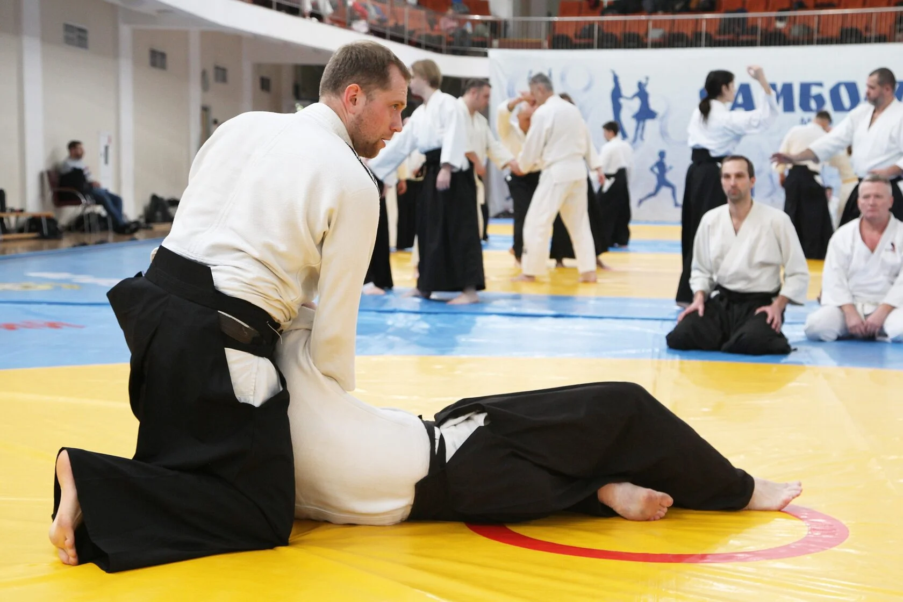
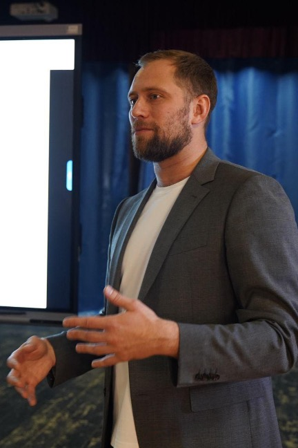

Устойчивость
Практики восстановления и переключения помогают замечать напряжение и возвращать ресурс.
Практика для компаний, которые инвестируют в процессы и в людей.
Обсудить программу
Что получает команда
Айкидо помогает прожить через движение то, что обычно обсуждают в переговорных: внимание к партнёру, координацию, границы, устойчивость и спокойную реакцию на изменения.
Практики восстановления и переключения помогают замечать напряжение и возвращать ресурс.
Работа в паре развивает контакт, координацию и умение действовать синхронно.
Навык управлять реакцией до того, как напряжение станет конфликтом.
Влияние без давления: сначала управлять собой, затем вести за собой других.
Способность ориентироваться в неопределённости, сохранять спокойствие и действовать точно.
Забота о команде становится живым опытом для каждого.

Почему айкидо
Индивидуальная программа
Начать можно с одного модуля, разовой встречи или регулярной программы для команды.
В офисе или зале: координация, устойчивость, работа с телом и партнёром. Подходит людям без подготовки.
Практики управления реакциями и эмоциями: импульсивность, напряжение, конфликтные ситуации.
Внимание, концентрация и бережное возвращение ресурса в интенсивном рабочем ритме.
Уверенность в теле, основы безопасного поведения и действия в критической ситуации. Возможны отдельные женские группы.
Разминка, суставная гимнастика и упражнения для снятия напряжения как часть заботы о здоровье команды.
Айкидо как модель лидерства: влияние, присутствие и ответственность без давления.
Как начинаем
Обсуждаем команду, контекст и задачи.
Выбираем формат, интенсивность и пространство.
Движение, рефлексия и понятный следующий шаг.
Связь с командой
Расскажите о вашей команде и задаче. Подготовим предложение под ваш формат.
Написать ИвануИван Егоров
+7 916 465-11-96
VANZEP@YANDEX.RU